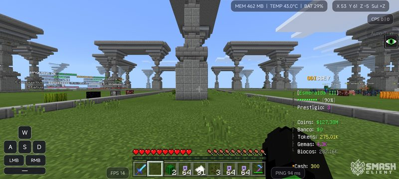
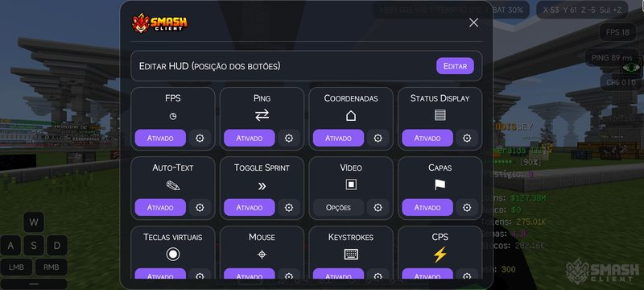
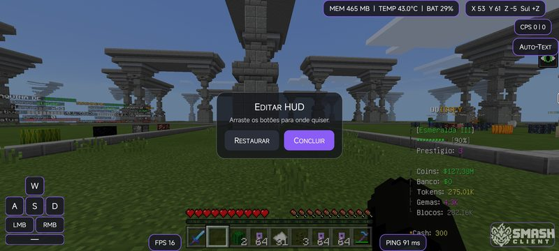
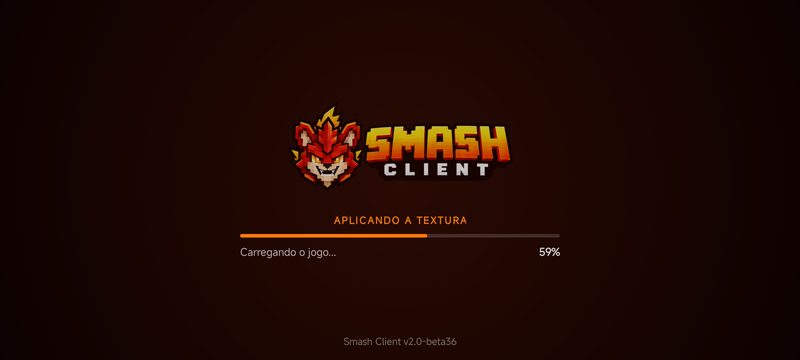

Céu do OptiFine no MCPE
A skybox do seu pack vira o céu do 1.1.5, com sol redondo e céu que muda ao longo do dia.
15 mods num menu só, mouse e teclado e HUD do seu jeito. Grátis, para Android, com o servidor Smash a um toque.
Tudo que faltava no Minecraft PE pra ele parecer o do computador, sem perder o jeito do celular.
Arraste pro lado pra ver mais ›




Tem um pack de textura do Java? Converta para o Smash Client direto no navegador.
Abrir o conversor ›6 bosses 3 vezes por dia, 56 degraus de rank e PvP do Java 1.8. E ele já vem na lista do Smash Client.
Conhecer o RankUp ›Sim. É só baixar, instalar e jogar.
Funciona em Android 4.4 ou mais novo, em celulares de 32 e 64 bits. É um APK só: o próprio app se ajusta ao seu celular.
Ainda não: o Smash Client é para Android. Mas dá pra conectar mouse e teclado no celular e jogar como no PC.
Abra Jogar › Servidores: o SMASH já está na lista. É só tocar e entrar.
Pode. Converta no nosso Conversor de Texturas, direto no navegador, e coloque no jogo.
No nosso Discord, nos canais do Smash Client.

O MCPE que você sempre quis está a um toque. 15 mods, mouse e teclado, HUD do seu jeito e o servidor Smash na lista. E é grátis. Baixe agora!
Do Carvão ao Blaze. Até onde você chega?
56 degraus de rank, 6 bosses 3 vezes por dia e PvP do Java 1.8. A temporada já começou: ainda dá tempo de chegar no topo.
No Smash Client o servidor já vem na lista: é só tocar e jogar.
Envie o resource pack do Minecraft Java 1.8.9 e receba pronto pro MCPE 1.1.5. Packs até 128x ficam com a mesma resolução. Só texturas maiores, que fariam o jogo fechar, são ajustadas, e o conversor avisa quais. Tudo no seu aparelho: o pack não sai daqui.
A skybox do seu pack vira o céu do 1.1.5, com sol redondo e céu que muda ao longo do dia.
Aqueles que fechavam o jogo, com minério 512x ou lava gigante, agora entram.
O .zip aparece aqui quando a conversão terminar. Depois siga o passo a passo de instalação logo abaixo.
Em .zip o pack vai direto na pasta resource_packs do jogo. O .mcpack é o mesmo pack, pro Smash Client das próximas versões, que importa com um toque. Por enquanto, use o .zip. Depois de ativar o pack, feche e abra o jogo de novo: assim ele carrega 100% e não dá crash.
Armazenamento interno › games › com.mojang › resource_packs%LOCALAPPDATA%\Packages\Microsoft.MinecraftUWP_8wekyb3d8bbwe\LocalState\games\com.mojang\resource_packsO pack é feito para a versão 1.1.5. Em versões mais novas do Windows 10 algumas texturas podem não aparecer.
games/com.mojang/resource_packs, e não em resource_packs de outra pasta.manifest.json tem que estar logo ali dentro. Se tiver uma pasta dentro de outra (Pack/Pack/manifest.json), tire a de dentro para fora.
Ainda não tem o Smash Client? 15 mods, mouse e teclado e o servidor Smash na lista. E é grátis.